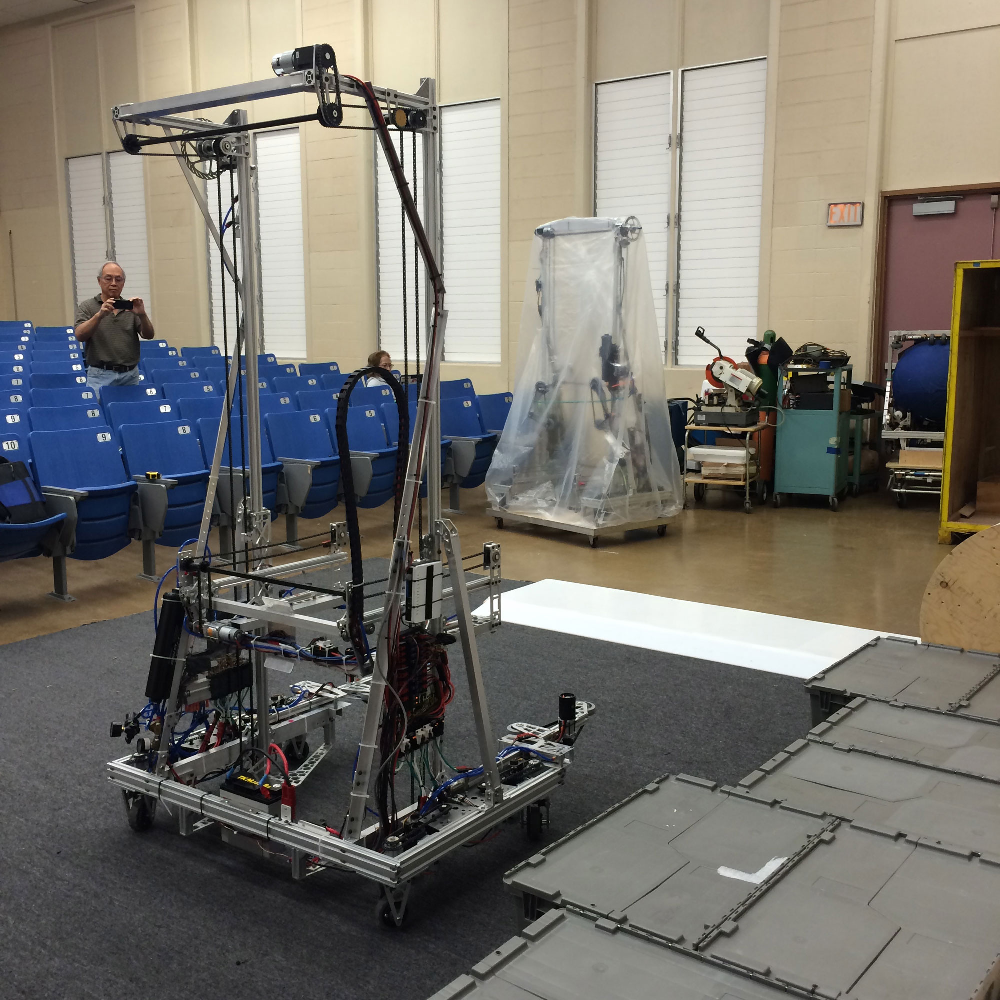
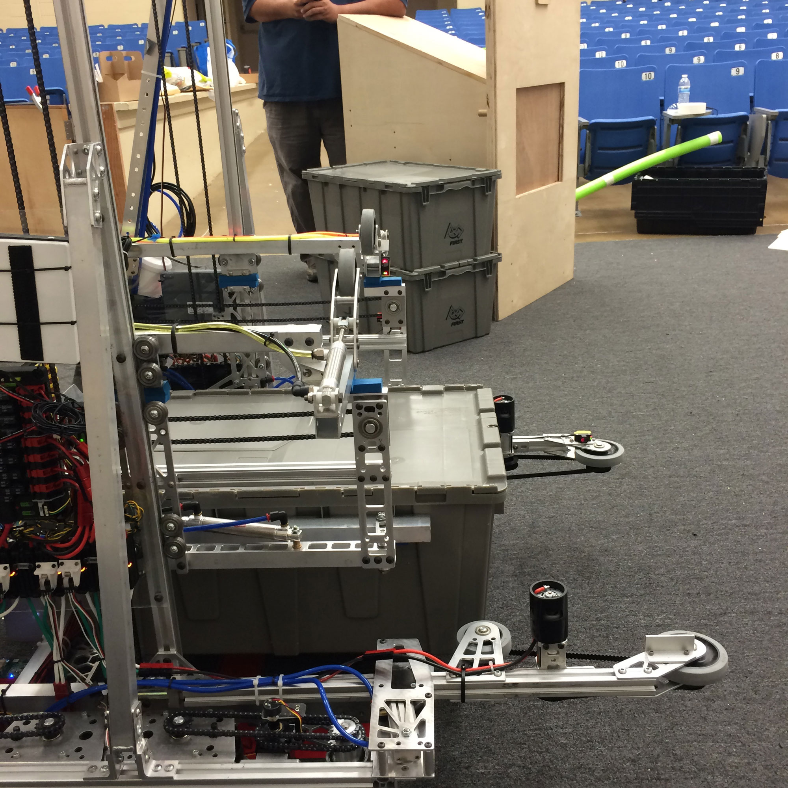
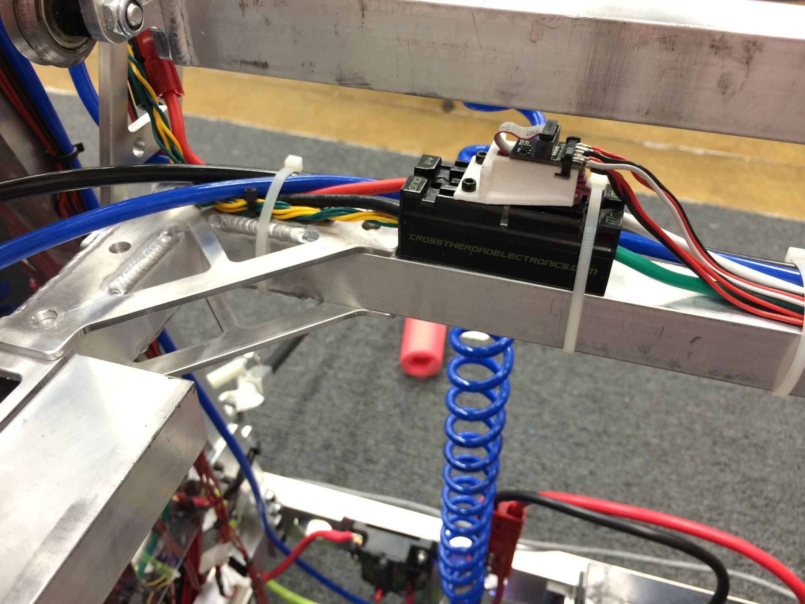
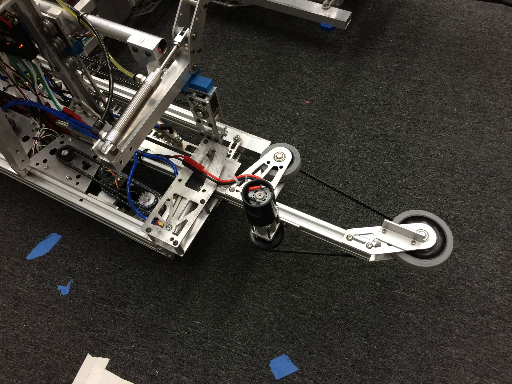
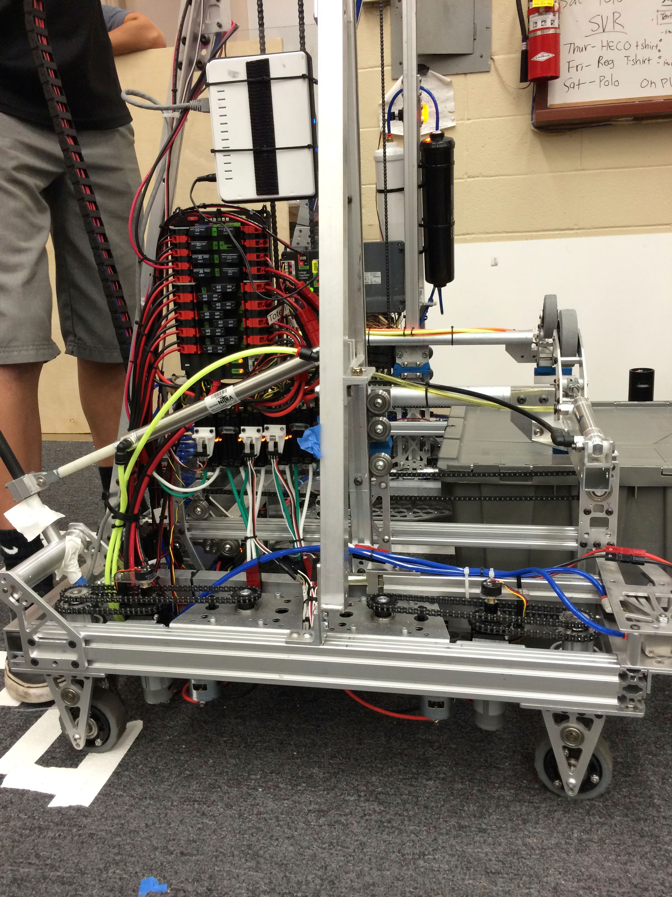

Year: Spring 2015
Team: Kika Mana #368
Competition: FIRST Robotics Compeition
Position: Captain and Coach
Awards: 1st Place at Hawaii, Finalist at San Jose Regionals, World Championship Carver Division

Objective
Picking up and stacking totes on scoring platforms, putting pool noodles ("litter") inside the recycling containers, and putting the containers at the top of the scoring stacks of totes.




About the Robot
The robot was designed to be able to intake both recycling bins and totes to the maximum height (6 totes + 1 recycling bin). The robot has an elevator system that moves the intook item upward, allowing for space for the next item to be intook. An additional aspect added to the elevator system are two wheels on each side of the elevator that are used to help hold the recycling bin in place and prevent it from falling of the high stack of totes. This robot also has two can grabbing hook mechanisms to allow for the robot to grab the recycling bins that are placed in the center of the field.